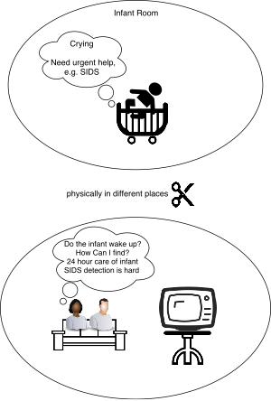
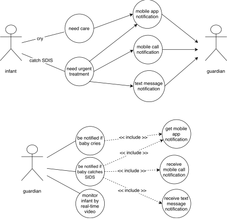
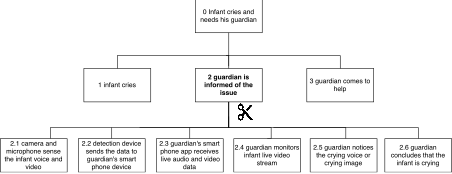
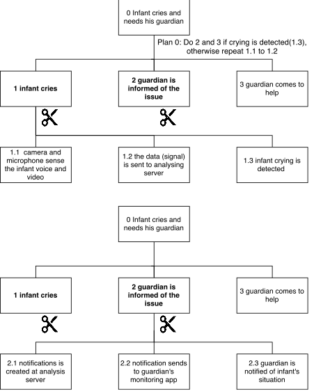
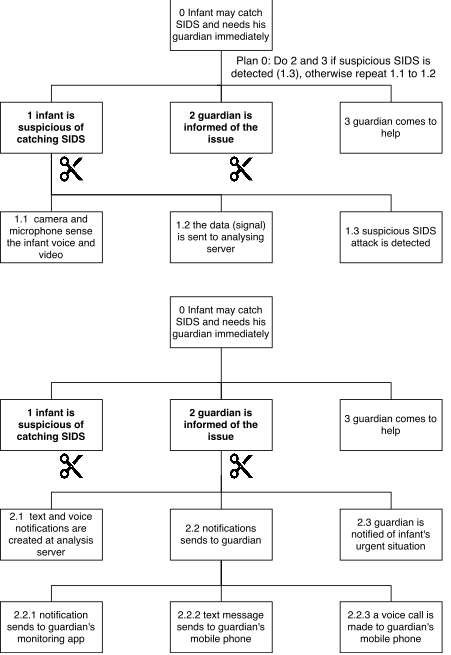
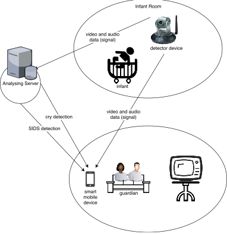

Written by Soheil Novinfard
Wednesday, 13 December 2017
By the sudden rise of complexity in modern world, people face the shortage of time to monitor all the things in their life. This is of the reasons leads to create many monitoring systems these days. In this area, infants and babies are of great importance where parents have to take care of them very carefully. On the other hand, it is not possible for parents or even babysitters to always stay near baby’s bed. Here, baby monitor systems play their role to help to ease the situation. In this article, we are going to describe video baby monitor in terms of iOT concepts.
For modelling the process, I used the “soft systems methodology” (SSM) [1][2] which can be useful for both general problem solving and change management in problematical and messy situations. The following is the description of our prototype design based on SSM model:
The study targets different problems by its multi-purpose design. First some definitions are defined to avoid ambiguity in later sections.
The “guardians” term is used to refer to parents, babysitters or any other one who are in charge of taking care of infants and babies. In addition, although the design can be applied to monitoring the wider range of children, we only focus on the “infants” which is used to refer to infants or toddlers who are in the age between new-born to 2 years of age.
The main problems which are tackled in this article are as follows:
Scenario 1) Some guardians intend to monitor the infants manually by watching them when they are not in the same place. The problem is that they are in different physical environments and the guardians cannot see infants to track their status. It happens in many situations, for instance, when they work at their workplace and they have got a babysitter for infants, a mother is cooking something for their family, or parents are watching television together at weekends. We named this scenario “manual monitoring”.
Scenario 2) The guardians should take care of infants in almost 24 hours of day, because of the sensitive condition of infants and possible dangers around them. For doing this, they have to be informed when infants start crying. We named this scenario “cry monitoring”.
Scenario 3) There is a dangerous potential syndrome among infants from one month to one year of age named “Sudden Infant Death Syndrome” [3], also known as SIDS which leads to a lot of death. If guardian can immediately be aware of the issue, there is a possibility to survive the infant, but the problem lies in the fact that this usually occurs when an infant is asleep. Also, if a guardian monitors baby manually, it needs them to be so precise of infant movements which is not always possible. We named this scenario “SIDS monitoring”.
In our design, the main stakeholders are guardians and infants as we mentioned before.
Our solution is based on these steps:
At first, some sensors are needed to sense the infants’ voice and movement to keep track of their conditions. Thus, a combination of a camera and a microphone forms the main necessary sensors.
Then in the next stage we need to transmit the data(signal) to both guardian and “analysing server”. First one is used for manual monitoring by guardians and second one is a part of our cry and SIDS monitoring solution. Here, wireless network connected to the Internet helps us to implement the transmission part.
We called the device which is used to sense and transmit the data as “detector device”.
In next step, the guardians would get the result from the detector device as live video stream of infant in their smart phones. In addition, if analysing server detects crying of baby without guardians noticing or SIDS, it will notify them by sending a message to their smart phone.
To having general picture of problem, it is modelled using the below sketch:

Figure 1 - general picture of problem statement
The main use cases for this problem can be shown as below:

Figure 2 - main use cases of video baby monitoring
In this stage of SSM, root definitions are represented based on different stakeholder viewpoints as follows:
· Infant world view
o ioSD (internet of smart devices) on infant detects he/she is crying and notifies the guardian
o ioSD on infant detects SIDS and notifies the guardian immediately
o ioSD on infant transfers the video and audio data (signal) of him to the guardian on remote area when he/she is requesting
· Guardian world view
o ioSD on guardian notify him/her from the infant who is crying
o ioSD on guardian notify him/her from the infant who may have SIDS and need immediate help
o ioSD on guardian gives live monitoring information of the infant by using received video and audio data (signal)
In SSM4, the essential actions and activities of system are modelled. The following “hierarchical task analysis” [4] graphs present the results of this modelling for the different scenarios:

Figure 3 - Hierarchical task analysis for scenario 1

Figure 4 - Hierarchical task analysis for scenario 2

Figure 5 - Hierarchical task analysis for scenario 3
The wide range of requirements is needed in this design. The main requirements are as follows:
· detector device with below components
o a night vision video camera (2.1 in scenario 1/ 1.1 in scenario 2,3)
o a microphone (2.1 in scenario 1/ 1.1 in scenario 2,3)
o wireless network component with Internet connectivity (2.2 in scenario 1 / 2.2 in scenario 2,3)
o a system board like Samsung Artik 10 Board
o power adapter
· smart mobile phone with below components
o a display (2.4 in scenario 1 / 2.2 in scenario 2,3)
o a speaker (2.4, 2.5 in scenario 1 / 2.2 in scenario 2,3)
o wireless network component (2.3 in scenario 1 / 2.2.1 in scenario 2,3)
o power adapter / sufficient battery for live video streaming
· analysing server with below components
o Internet-based SMS service and related API for sending text messages (2.2.2 in scenario 3)
o Internet-based voice call service and related API, e.g. Twilio (2.2.3 in scenario 3)
o wireless network component (2.2,2.3 in scenario 1 / 2.2 in scenario 2,3)
o power adapter
· monitor mobile application with below requirements
o access to background threads
o access to network connectivity
o minimum 10 to 20 MB storages for application itself (based on software implementation)
o minimum 10 MB storages for live video buffering (2.3 in scenario 1)
In terms of functional requirements, the system should keep track of infant state accurately and run for long periods of turn. It is necessary that the system runs in real-time with maximum 30 seconds latency. The system should be able to send notifications properly, especially in urgent situations such as SIDS monitoring.
Generally speaking, the system must be easy to use and reliable. It should work with low-speed Internet connections as well. In addition, a secure connection algorithm for live video streaming, SRTP [5] for instance, is required as it is a concerning issue among baby monitoring systems.
We can use mobile phone instead of detector device, but as it is not designed for long-term usage, we lose a lot of energy and the its durability is considerably shorter. In addition, most mobile phones excluding pioneer models has not enough sensitivity level, especially for SIDS monitoring. It is not so expensive too, because we just have to implement two sensors including microphone and camera with networking component.
On the other hand, we did not build special device to show the result of monitoring tasks. Instead, we used ordinary smart phone due to the fact that it has all necessary components needed for this purpose and suits all the requirements. Whenever guardian wants to do manual monitoring can open the app and watch the infant using the wireless connectivity and Internet. In case of SIDS and cry monitoring, only a background thread of mobile phone and internet connection are sufficient to fulfil our needs.
We added a video camera to our baby monitoring solution which is not very popular in existing solutions. By adding this sensor, we have increased the cost of product a little, but a lot of functionalities and improvements performed by this new component, including SIDS detection, one of dangerous common syndromes among infants in the new century where it is not sensible to have only one-purpose product for this issue. Video monitoring is of great importance for parents commuting to their workplace as well, as they can monitor their infant while a babysitter is at home. The camera sensor improves the cry monitoring significantly comparing to microphone-only design.
In the design of detector device, the power adapter is chosen rather than battery. It is because we need this device for a long period of time, so battery is not good option. It also decreases the final cost of the product. However, using power adapter reduces the movability of device, but this factor is not so important here.
We discussed some aspects of design options in SSM5. Here we explain more detail about.
First of all, there are many similar projects which are currently used for baby monitor, some of them are using a microphone or a camera or both of them as their main sensors like “GHB Video Baby Monitor" and “BT Digital Audio Baby Monitor 400” as popular commercial products among them. But they are some main differences here to be discussed which makes this design feature comparing with competitors:
· In our design, we used wireless network with Internet connectivity rather than Bluetooth used by most products. This feature enables us to use it as remote monitoring system and it is applicable for houses with big and medium sizes as well places where Bluetooth signal does not have enough strength to transmit the data.
· The other important difference lies with the fact that almost none of the similar products have SIDS monitoring and it is something new which guardians who care more about their infant health status or the parents that being notified of probable SIDS problem in their infant.
· The two important parts of the design, “analysing server” and “monitoring mobile application” give this system automated monitoring feature including SIDS monitoring and cry monitoring. Above all, this design pattern allows flexibility and extensibility without major changes in hardware. For instance, suppose that a new disease spreads among infants. In this case, there is a possibility that by finding its features and train our detection model based on this at analysing server, the system notifies the guardians about the new disease as well.
Now, let us look at some design issues and constraints. One of the constraints of system is related to latency of processing video frames. Sometimes it can take more than 1 minute for automated detection at server based on survey as processing of 30 second video may take 90 seconds by regular machine learning algorithms [6]. We can use different approaches to solve this issue. Our suggestion is to use spark big data processing model to speed up the processing time and take more efficient parallel algorithm in this area.
Another limitation is the number of concurrent requests at server. Because our design is completely real-time and the sensors information is always sending to analysing server, the system is not extendable and by having limited number of users (guardians) our resources will finish. A solution to this problem could be designing a pre-process stage at detector device before data transmission to server.
Our design is shown at the following diagram:

Figure 6 - a video baby monitoring solution
[1] P Checkland, J Poulter; Systems approaches to managing change: A Practical Guide pp 191-242, 2010 - Springer
[2] Wilson B., Soft Systems Methodology Conceptual Model Building and its Contribution, 2001 - Wiley ISBN0-471-89489-3
[3] RY Moon, RSC Horne, FR Hauck; Sudden infant death syndrome - The Lancet, 2007 – Elsevier
[4] NA Stanton; Hierarchical task analysis: Developments, applications, and extensions; Applied ergonomics, 2006 – Elsevier
[5] P. Iyyanar, M. Chitra, and P. Sabarinath; Effective and Secure Scheme for Video Streaming Using SRTP; 2012, International Journal of Machine Learning and Computing, Vol. 2, No. 6
[6] R Pereira, M Azambuja, K Breitman; An architecture for distributed high performance video processing in the cloud, 2010; IEEE 3rd International Conference on Cloud Computing